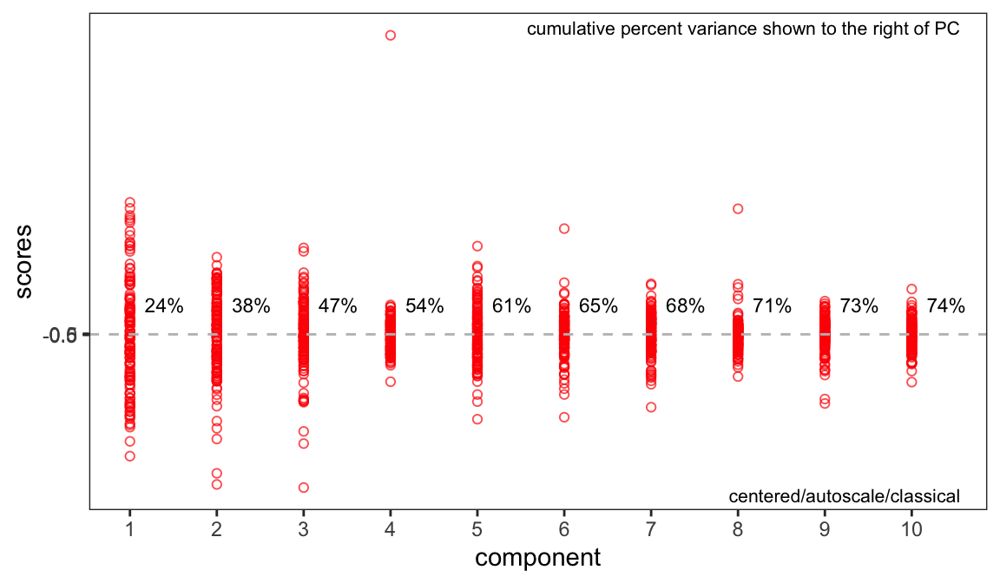
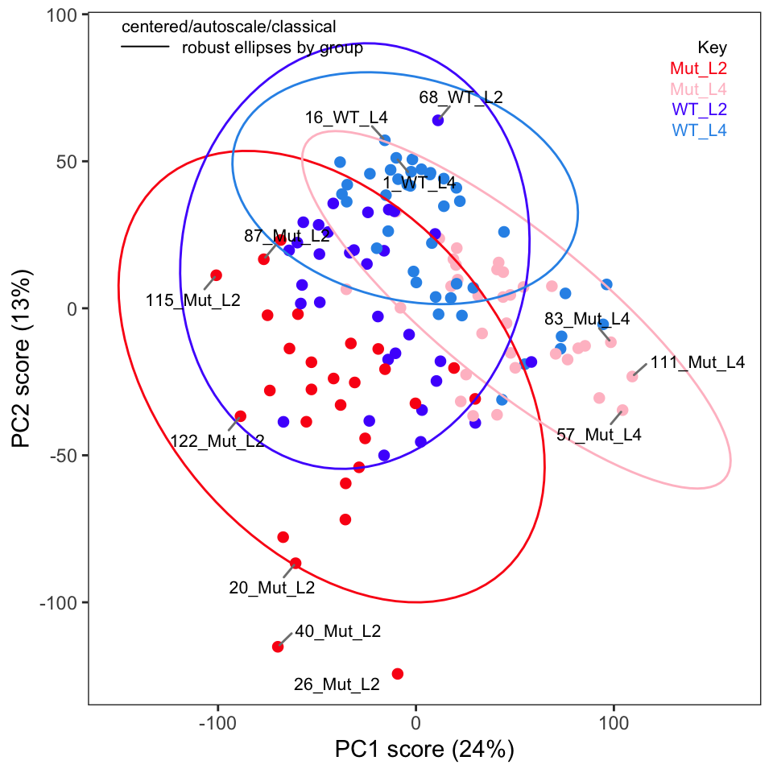
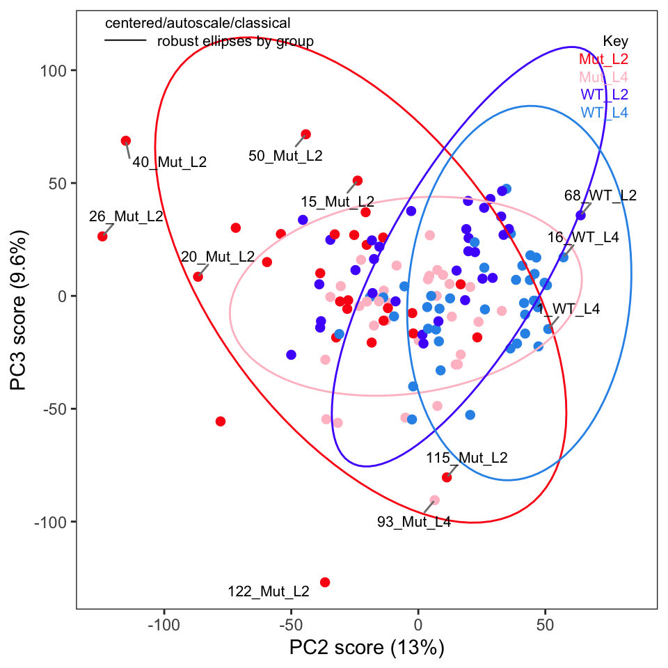
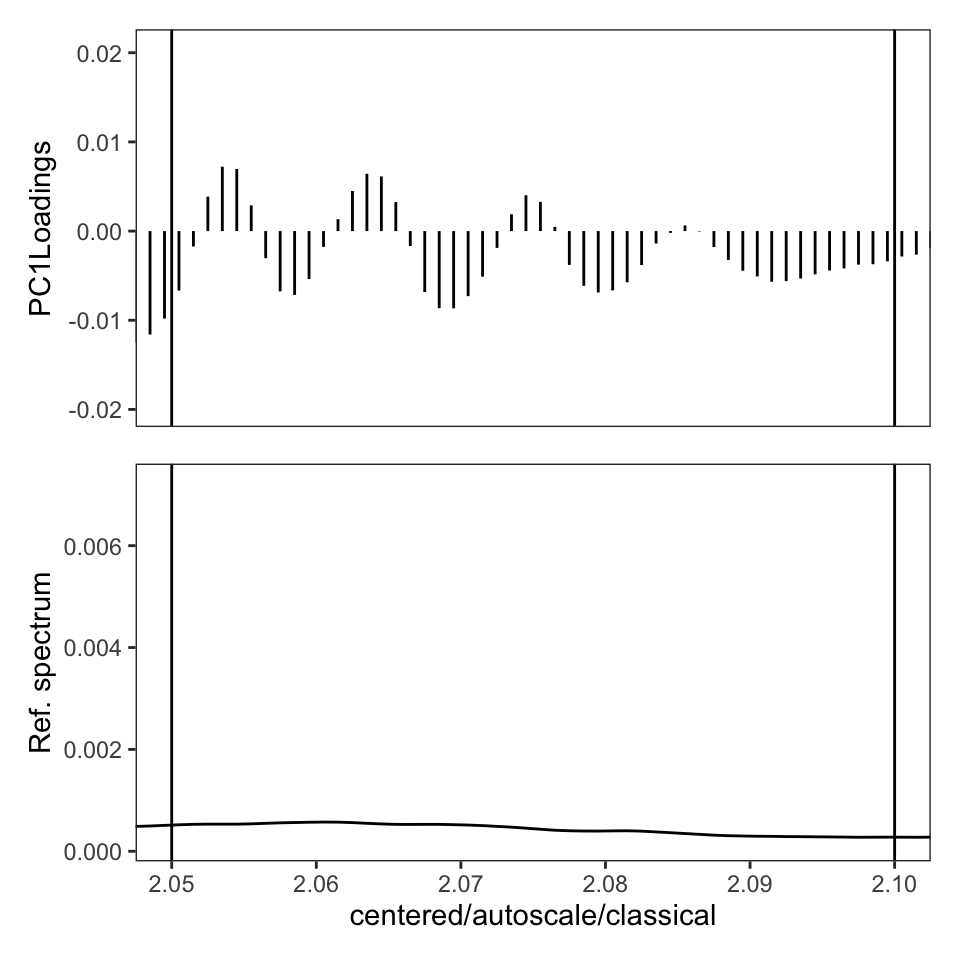

If you aren’t familiar with ChemoSpec, you might wish to look at the introductory vignette first.
In this series of posts we are following the protocol as described in the printed publication closely (Blaise et al. 2021). The authors have also provided a Jupyter notebook. This is well worth your time, even if Python is not your preferred lanaguage, as there are additional examples and discussion for study.
Read in the Data
Load the Spectra object we created in Part 2 so we can summarize it.
library("ChemoSpec")
load("Worms2.RData") # restores the 'Worms2' Spectra object
sumSpectra(Worms2)
C. elegans metabolic phenotyping study (Blaise 2007)
There are 133 spectra in this set.
The y-axis unit is intensity.
The frequency scale runs from
8.9995 to 5e-04 ppm
There are 8600 frequency values.
The frequency resolution is
0.001 ppm/point.
This data set is not continuous
along the frequency axis.
Here are the data chunks:
beg.freq end.freq size beg.indx end.indx
1 8.9995 5.0005 -3.999 1 4000
2 4.5995 0.0005 -4.599 4001 8600
The spectra are divided into 4 groups:
group no. color symbol alt.sym
1 Mut_L2 28 #FB0D16FF 0 m2
2 Mut_L4 33 #FFC0CBFF 15 m4
3 WT_L2 32 #511CFCFF 1 w2
4 WT_L4 40 #2E94E9FF 16 w4
*** Note: this is an S3 object
of class 'Spectra'Exploratory Data Analysis, Con’t.
If you recall in Part 2 we removed five samples. Let’s re-run PCA without these samples and show the key plots. We will simply report these here without much discussion; they are pretty much as expected.
c_pca <- c_pcaSpectra(Worms2, choice = "autoscale")plotScree(c_pca)
p <- plotScores(Worms2, c_pca, pcs = 1:2, ellipse = "rob", tol = 0.02)
p
p <- plotScores(Worms2, c_pca, pcs = 2:3, ellipse = "rob", leg.loc = "topright",
tol = 0.02)
p
One thing the published protocol does not explicitly discuss is an inspection of the loadings, but it is covered in the Jupyter notebook. This is useful in order to see if any particular frequencies are driving the separation of the samples in the score plot. Let’s plot the loadings (Figure @ref(fig:loadings)). Remember that these data were autoscaled, and hence all frequencies, including noisy frequencies, will contribute to the separation.
p <- plotLoadings(Worms2, c_pca, loads = 1:2)
p
p <- sPlotSpectra(Worms2, c_pca, tol = 0.001)From Figure @ref(fig:sps) we can see that the peaks around \(\delta\) 1.30 - 1.32, 1.47-1.48, and 3.03 - 3.07 are important drivers of the separation in the score plot. As an illustration, let’s look at the loadings around \(\delta\) 1.3 a bit more closely.
p <- plotLoadings(Worms2, c_pca, loads = 1)
p <- p & coord_cartesian(xlim = c(2.05, 2.1)) # why & not +
p <- p & geom_vline(xintercept = seq(0.1, 5, by = 0.05))
p
This post was created using ChemoSpec version 6.1.3 and ChemoSpecUtils version 1.0.0.